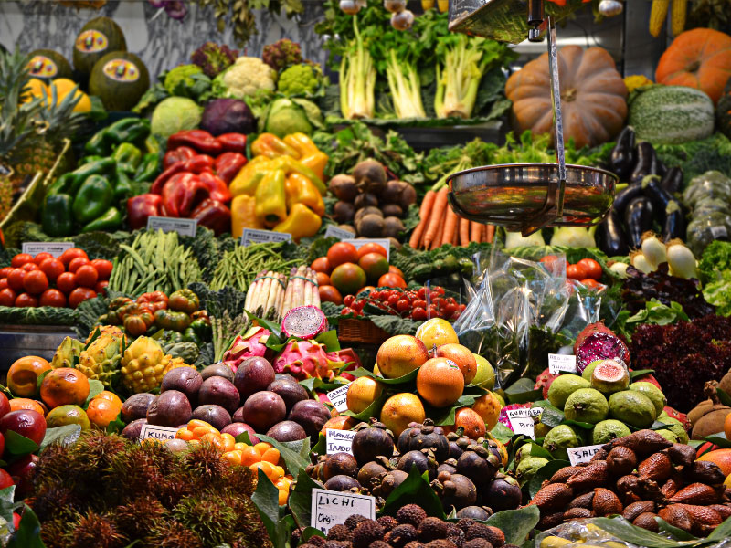

Five Recipes that can change your life
By Jamie gill
2 hours ago
SHARE on:
Crescent Rolls, Cream Cheese and Grapefruit: An Easy Recipe for Kids

Cooking with kids can be a challenge, but there’s no need to tackle hollandaise or souffles. When looking for a kid-friendly recipe, choose something that’s simple and hands-on.For example, the following recipe for Texas Reds in a Blanket involves spreading cream cheese, folding refrigerated crescent roll dough and sprinkling cinnamon sugar, giving junior pastry chefs plenty to do. The accompanying sauce only requires the use of a microwave, though you should handle any hot bowls or cookie sheets yourself.Use Texas Rio Star Grapefruit, which is sweeter than other varieties of grapefruit. The grapefruit season runs from October to May. When buying grapefruit, look for fruits that feel heavy for their size, as that indicates a juicy fruit.
A Recipe for a Healthier Lunch
Those who want to save money and improve their diets can’t do better than brown-bagging their lunch. Look for recipes that use fresh, whole ingredients and that combine protein with healthy carbohydrates. For example, the following recipe for Rio Star Grapefruit & Quinoa Salad combines vegetables and citrus fruit with quinoa, a whole grain that supplies a complete protein. Quinoa, which is like couscous in texture, contains protein, iron, fiber and vitamin B6, while fresh grapefruit contains vitamins A and C. Look for Texas Rio Star Grapefruit, a red variety that’s especially sweet. When choosing grapefruit, pick one that feels heavy for its size – that means that it’s extra juicy.
White Bean Chili Recipe Will Warm the Heart

Five words or less(NewsUSA) – Hearty stews and belly-warming soups are coming out of the kitchens; frost is sparkling, and winter jackets are coming out of hiding. Families are craving slow-cooked, savory meals that yield health benefits and leftovers. Delicious, savory winter-recipe ingredients that will surely satisfy are white beans and Oso Sweet Onions, an onion grown at the foot of the Andes Mountains. Onions are not only believed to be a cancer preventative, their low-salt, low-fat health benefits are the proactive equivalent to superhero powers. Onions have 25 compounds that lower blood pressure and cholesterol, prevent thrombosis, inhibit strokes and battle heart disease, says the American Heart Association. Plus, the antioxidants and flavonoids found in onions don’t lose their potency once cooked. This makes them ideal for slow-cooked recipes. They add a punch of flavor and a whopping serving size, making them an affordable luxury during the chilly winter months.
Get Your Grill on With California Raisin Chipotle Grilling Sauce

It’s that time of the year again – time to dust off the barbecue and gather the family together to celebrate summer! As happy as you are to kick off the grilling season, that same old barbecue sauce is eventually going to wear out its welcome. If you’re tired of traditional sauces every summer, try looking for new inspiration. Add a twist to your grilling favorites with an unlikely recipe helper: California Raisins. Raisins add a deliciously sweet zip to savory relishes and homemade sauces, and as an added bonus, all the flavor that California Raisins bring to your recipe is even better because the fruit is fat- and cholesterol-free, as well as naturally low in sodium. This grilling sauce recipe is sure to add refreshing flavor to any summer favorite:
Spice Up Dinner With American Catfish and Peppercorns
Five words or less(NewsUSA) – Tired of the same boring dinner, night in and night out? Don’t let dull, tasteless meals become the norm. Instead, try this catfish recipe that is sure to spice up your night. Catfish with Peppercorns on a bed of Sautéed Spinach and Matchstick Vegetables subjects taste buds to flavors that are sure to entice any lover of spice. The U.S. Farm-Raised Catfish has a pleasing, mild taste that blends flawlessly with the pepper and vegetable flavors.